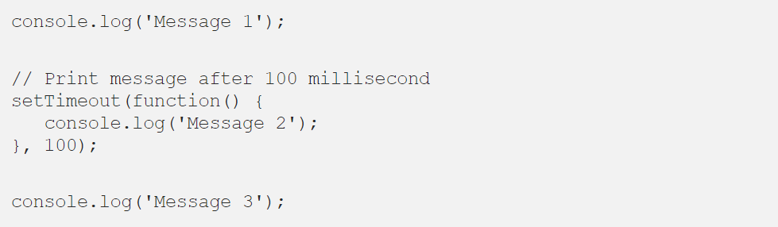

Actually Event loop is something which is handling the asynchronous code execution in JavaScript.
As you know the Javascript is single thread language, which means the two statement can not be executed in parallely And JavaScript is executing our code line by line which means each javascript statements are synchronous. But there is a way to run your code asynchronously, if you use setTimeout() function which makes sure that your code executes after specified time (in millisecond). Example code:

After executing above statements, Your browser will print “Message 1” & “Message 3” first, then it will print “Message 2”. This is where event loop comes into the picture, which makes sure your asynchronous code runs after all the synchronous code is done executing.